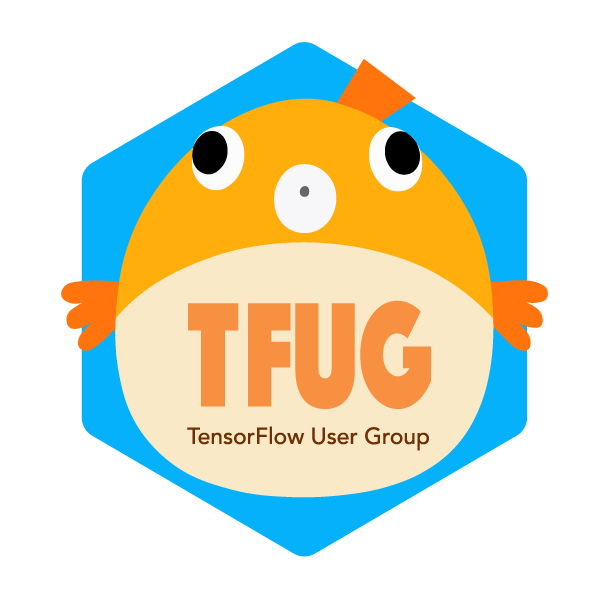

What is TFUG?
TensorFlow User Group (TFUG) は有志による TensorFlow のコミュニティです。
TFUG は以下のような人を歓迎します:
- TensorFlow を使っている人
- 他のフレームワークを使っているけれど TensorFlow にも興味がある人
- 現在 TensorFlow を使っていないけれど興味がある人
所属や肩書は問わず、様々なバックグラウンドを持つ人に参加して頂けると嬉しいです。
SNS
EVENT
イベントの開催は主に Connpass を使用しています。各詳細についてはイベントを参照してください。